Anatomy of the Gluteal Region & Thigh
- The greater sciatic foramen is the doorway from pelvis to buttock. Piriformis is the landmark: only the superior gluteal vessels and nerve exit above it; the inferior gluteal vessels and nerve, sciatic nerve, posterior cutaneous nerve of the thigh and the pudendal bundle exit below. The pudendal nerve and internal pudendal vessels then duck back through the lesser sciatic foramen into the perineum.
- Gluteus maximus (inferior gluteal nerve) extends the hip and gets you out of a chair. Gluteus medius and minimus plus TFL (superior gluteal nerve) abduct and medially rotate the hip and keep the pelvis level when walking. The deep lateral rotators (piriformis, gemelli, obturator internus, quadratus femoris) turn the thigh out and steady the femoral head.
- Trendelenburg: superior gluteal nerve or gluteus medius weakness makes the pelvis drop on the side of the swinging leg; the weak muscle is on the stance side. A right-hip drop on right swing = left gluteus medius.
- Intramuscular injections go in the superolateral quadrant of the buttock (index finger on the ASIS, fingers spread along the iliac crest) to avoid the sciatic nerve (L4–S3, tibial + common peroneal in one sheath).
- The thigh has three compartments. Anterior: flex the hip, extend the knee, femoral nerve. Medial: adduct the hip, obturator nerve. Posterior (hamstrings): extend the hip, flex the knee, sciatic nerve (tibial division; the short head of biceps gets the common peroneal).
- Femoral triangle (inguinal ligament, sartorius, adductor longus), lateral to medial: NAVEL (nerve, artery, vein, empty canal, lymphatics). A bulge below the inguinal ligament, more common in women = a femoral hernia through the femoral ring. The medial circumflex femoral feeds the femoral head; the great saphenous vein is the bypass graft.
Learning Objectives
- Identify the muscles of the gluteal region and the three thigh compartments, their actions and their nerves.
- Describe the passage of structures through the greater and lesser sciatic foramina, and the femoral triangle, adductor canal and popliteal fossa.
- Relate the anatomy to Trendelenburg gait, safe gluteal injections, sciatic nerve injury, hamstring and adductor strains, popliteal aneurysm and femoral hernia.
Dr. Charys Martin, 112 minutes over nine short recordings and their knowledge-check feedback videos. Dr. Martin warns it's a large module, built as separate lessons so it works as a reference. It builds on the Hip Joint, and with it and Thursday's Hip Pain module it's the prep for Friday's Hip & Thigh lab. Attachments are left out of the tables below except where they matter clinically; the slides show them.
The Gluteal Region
Ligaments and spaces, muscles, neurovasculature.
Ligaments and Spaces
Two ligaments turn the sciatic notches into foramina. The sacrotuberous ligament runs from the sacrum to the ischial tuberosity; the sacrospinous ligament, deep to it, from the sacrum to the ischial spine.
| Greater sciatic foramen: pelvis → gluteal region | Lesser sciatic foramen: gluteal region → perineum |
|---|---|
| Piriformis; the superior and inferior gluteal vessels and nerves; the sciatic nerve; the posterior cutaneous nerve of the thigh; the nerve to quadratus femoris; and (passing through both) the pudendal nerve, nerve to obturator internus and internal pudendal vessels | The pudendal nerve, nerve to obturator internus and internal pudendal vessels (they leave the pelvis, then go straight back in to reach the perineum); the obturator internus tendon |
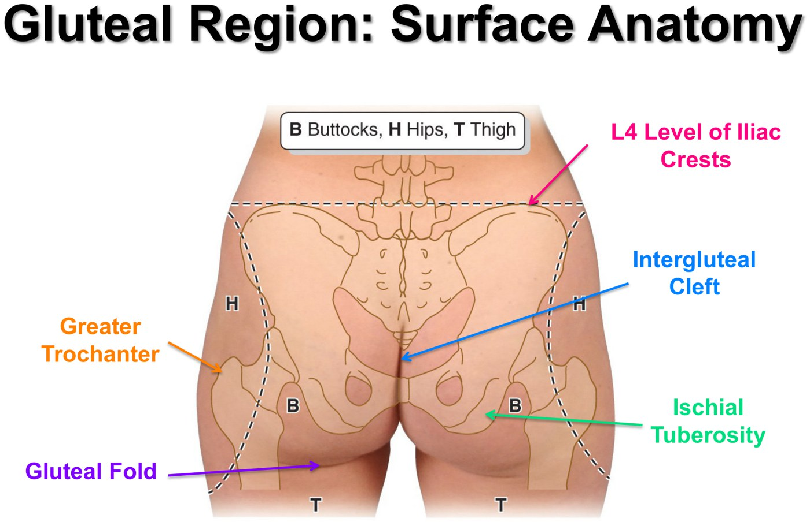
Knowledge check
Which structures pass from the pelvis to the gluteal region or thigh through the greater sciatic foramen? → the superior and inferior gluteal neurovascular bundles, piriformis, the sciatic nerve and the posterior cutaneous nerve of the thigh. The pudendal nerve and internal pudendal vessels pass through it too, but they're heading to the perineum, not the buttock or thigh.
Gluteal Muscles
As a group they abduct, laterally rotate and extend the hip.
| Muscle | Action | Nerve | Point |
|---|---|---|---|
| Gluteus maximus | Extends the hip; helps you stand up from sitting | Inferior gluteal | Ends partly in the IT band, which matters for hip and knee pain |
| Gluteus medius and minimus | Abduct and medially rotate the hip; stabilize the pelvis in gait | Superior gluteal | Weakness = Trendelenburg |
| Tensor fasciae latae | Flexes the hip; tenses the IT band | Superior gluteal | Arises from the ASIS (avulsed in teens, below) |
| Deep lateral rotators: laterally rotate (and abduct) the thigh; hold the femoral head in the acetabulum | |||
| Piriformis | Lateral rotation; abduction | Nerve to piriformis | Pear-shaped; leaves the pelvis through the greater sciatic foramen: the key landmark |
| Superior gemellus, obturator internus | Lateral rotation | Nerve to obturator internus | Obturator internus's tendon leaves through the lesser sciatic foramen |
| Inferior gemellus, quadratus femoris | Lateral rotation | Nerve to quadratus femoris | |
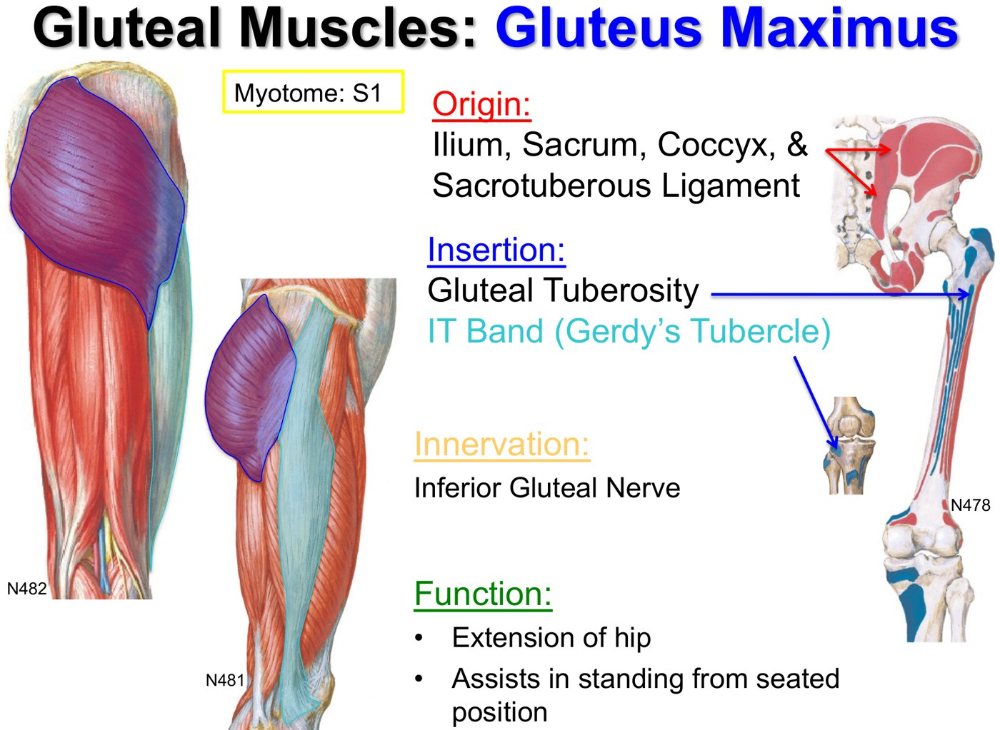
Gluteus maximus. Slide from the deck (Netter).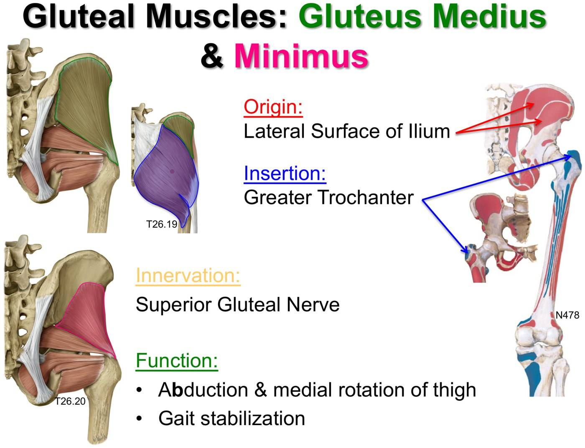
Gluteus medius and minimus. Slide from the deck (Netter).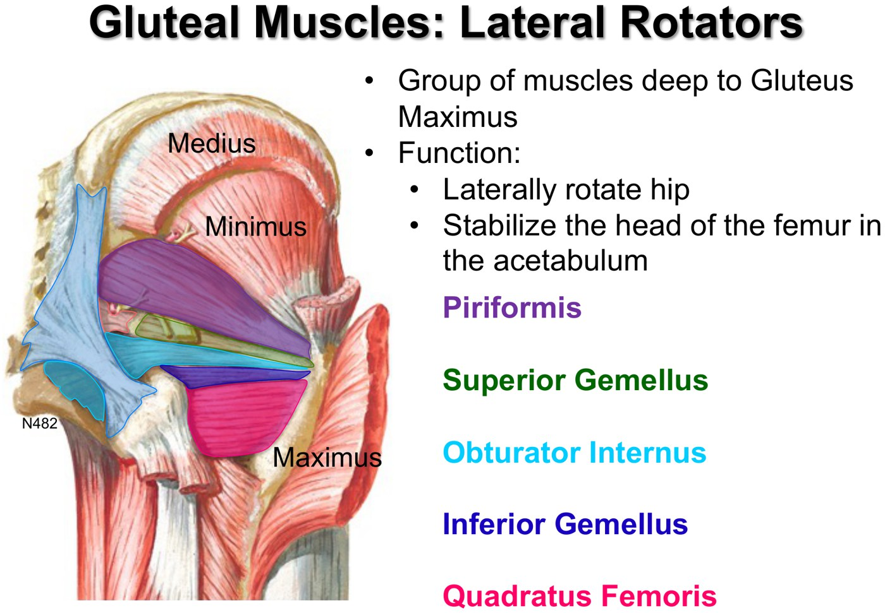
The deep lateral rotators. Slide from the deck (Netter).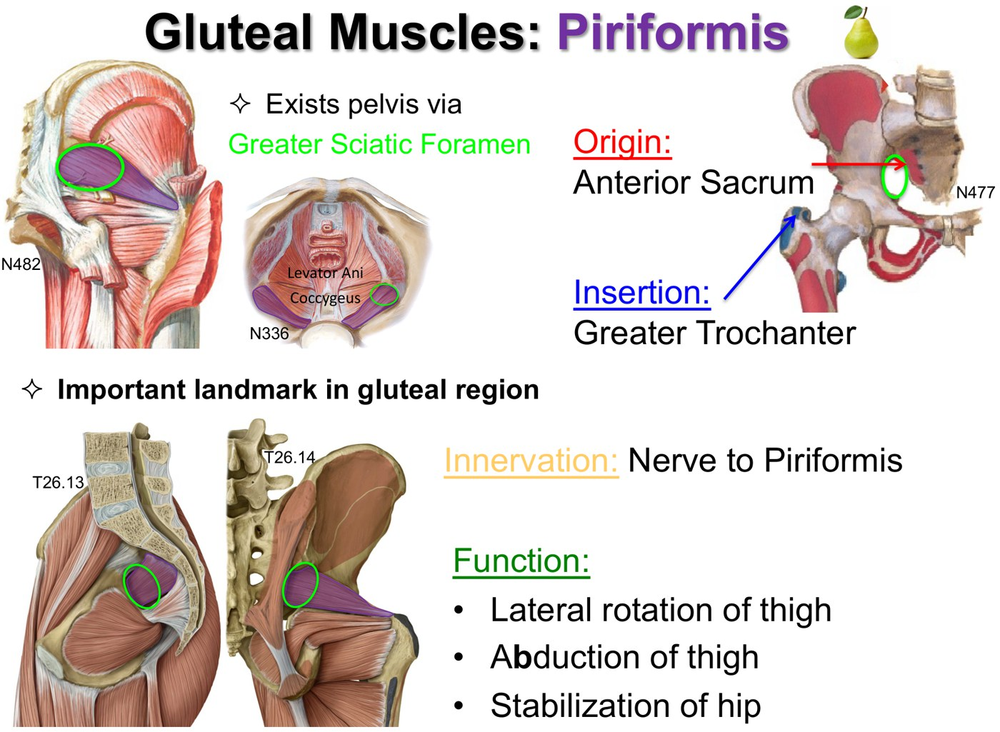
Piriformis, the landmark. Slide from the deck (Netter).When one foot leaves the floor, the gluteus medius and minimus of the standing leg contract to stop the pelvis tipping toward the unsupported side. If they're weak or the superior gluteal nerve is injured (e.g. in hip replacement surgery), the pelvis drops on the side of the swinging leg: a positive Trendelenburg test (standing on one leg) and a Trendelenburg gait. The dropped side's leg is now too long to clear the floor, so the patient leans away from it (a gluteus medius gait). Always think of both the muscle and its nerve.
Knowledge check
A 72-year-old is limping two weeks after a total hip replacement; her right hip drops every time the right leg swings. → the left gluteus medius (with minimus) isn't working: the stance side. Its nerve is the superior gluteal. In the video it's far less dramatic than you'd expect.
Gluteal Neurovasculature
| Structure | Exits the greater sciatic foramen | Supplies |
|---|---|---|
| Superior gluteal artery and nerve (L4–S1) | Above piriformis; the nerve runs between medius and minimus | Gluteus medius, minimus and TFL |
| Inferior gluteal artery and nerve (L5–S2) | Below piriformis | Gluteus maximus |
| Nerves to obturator internus and quadratus femoris | Below piriformis | The lateral rotators (with the gemelli) |
| Pudendal nerve (S2–S4) and internal pudendal artery | Below piriformis, then back through the lesser sciatic foramen | The perineum |
| Sciatic nerve (L4–S3) | Below piriformis, into the posterior thigh | The largest nerve in the body: really two nerves in one sheath, the tibial and the common peroneal (fibular) |
| Posterior cutaneous nerve of the thigh (S1–S3) | Below piriformis, deep to gluteus maximus | Skin of the lower buttock, posterior thigh and popliteal fossa |
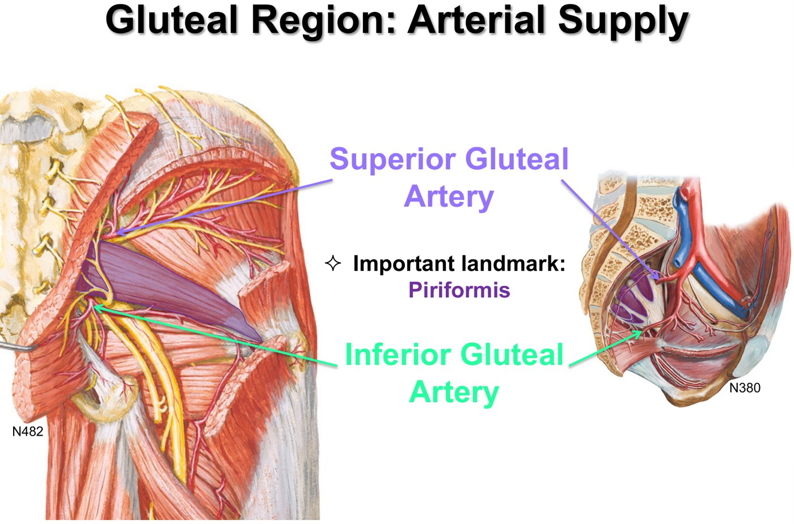
Gluteal arteries above and below piriformis. Slide from the deck (Netter).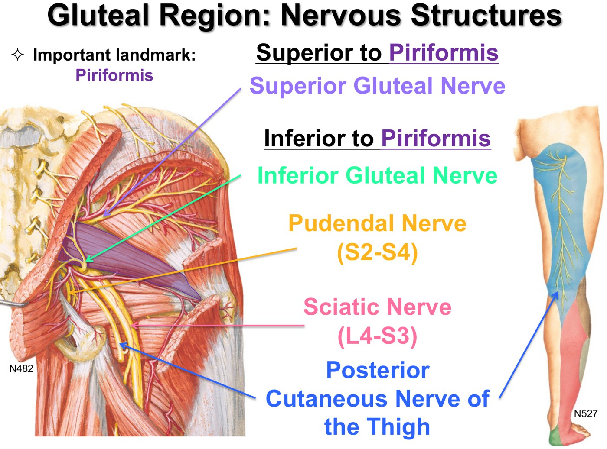
Gluteal nerves. Slide from the deck (Netter).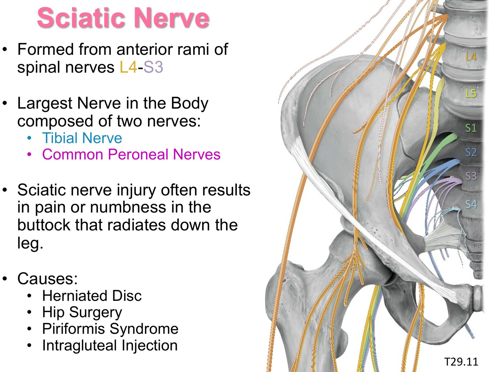
The sciatic nerve and what injures it. Slide from the deck.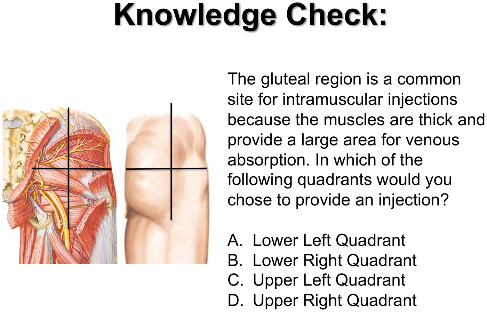
Where to inject? The upper outer (here upper right) quadrant. Slide from the deck.| Clinical point | Detail |
|---|---|
| Sciatica (sciatic nerve injury) | Pain, tingling or numbness from the buttock to the foot. Causes: a herniated disc, hip surgery, piriformis syndrome, an intragluteal injection. |
| Piriformis syndrome | The nerve usually exits below piriformis, but may pass partly or wholly through it and get squeezed. Common in athletes who overuse the glutes. NSAIDs, rest, stretching. |
| Intragluteal injections | Thick muscle with a large area for absorption. Inject the superolateral quadrant: index finger on the ASIS, spread the fingers back along the iliac crest, inject between index and middle finger. That's away from the sciatic nerve and the structures leaving the greater sciatic foramen; low and lateral is the bony greater trochanter, without thick muscle. |
The Thigh
Posterior, anterior and medial compartments, then the vessels and lymphatics.
Thigh Organization
The deep fascia, the fascia lata, sends medial, lateral and posterior intermuscular septa in to the femur, making three compartments.
| Compartment | Function | Nerve |
|---|---|---|
| Anterior | Flex the hip, extend the knee | Femoral |
| Medial | Adduct the hip | Obturator, with two exceptions: the hamstring part of adductor magnus (tibial) and pectineus (femoral) |
| Posterior | Extend the hip, flex the knee | Branches of the sciatic |
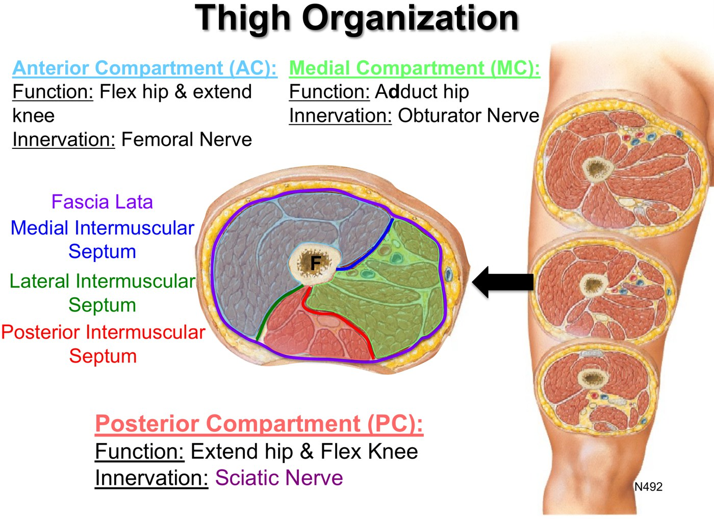
Posterior Compartment: the Hamstrings
| Muscle | Action | Nerve | Point |
|---|---|---|---|
| Biceps femoris | Extends the hip (long head), flexes the knee | Long head: tibial division; short head: common peroneal division | The lateral hamstring, to the head of the fibula; the short head is the one that doesn't start at the ischial tuberosity |
| Semitendinosus | Extends the hip, flexes the knee | Tibial division | A long tendon; part of the pes anserinus |
| Semimembranosus | Extends the hip, flexes the knee | Tibial division | Deep to semitendinosus, muscular lower down |
The pes anserinus ("goose's foot") is the joint tendon of sartorius, gracilis and semitendinosus on the anteromedial proximal tibia, superficial to the MCL ("SGT", one muscle from each compartment).
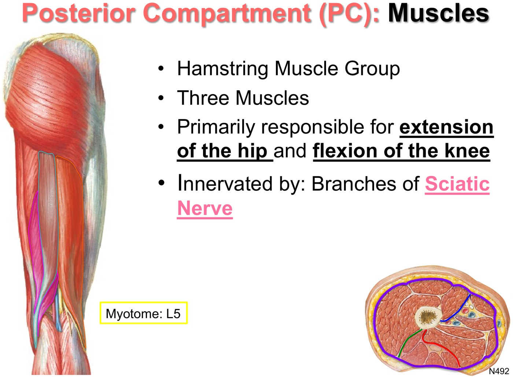
The hamstrings. Slide from the deck (Netter).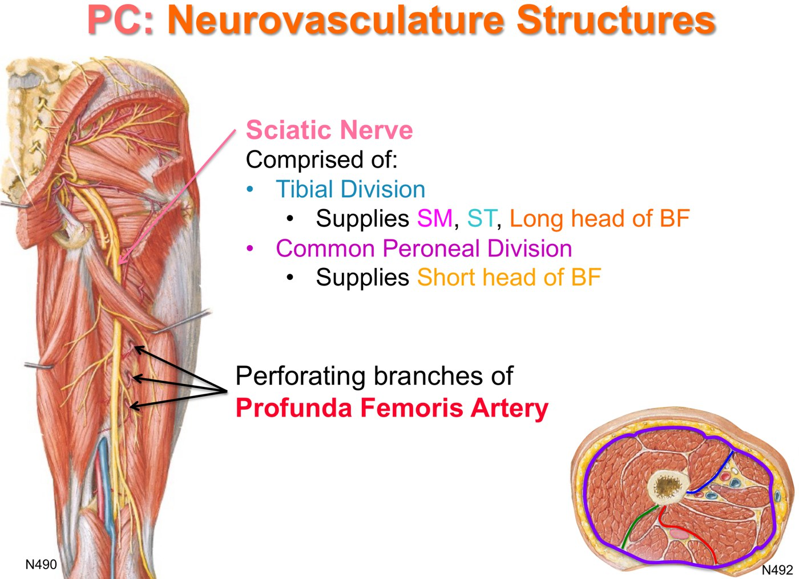
Sciatic divisions and the perforating arteries. Slide from the deck (Netter).| Structure | Detail |
|---|---|
| Sciatic nerve | Its tibial and common peroneal divisions run in one sheath deep to the long head of biceps femoris. Tibial supplies every posterior muscle except the short head of biceps. |
| Perforating arteries (from the profunda femoris) | Pierce adductor magnus to reach the back of the thigh. The compartment has no artery of its own: it's fed by the inferior gluteal, medial circumflex femoral, perforating and popliteal arteries. |
| Popliteal artery and vein | The femoral vessels, renamed after passing through the adductor hiatus (a gap between adductor magnus and the femur) |
A muscle tears when it's actively contracting while passively stretched: the hurdler's lead leg. Expect extreme pain and a big hematoma (torn fibres rupture their vessels). Forcible hip flexion with the knee extended can avulse the common hamstring origin off the ischial tuberosity. The muscle keeps pulling the bony piece away, so a displaced avulsion needs surgical reattachment.
Knowledge check
A 26-year-old hurdler feels a pop in the back of his lead thigh; three days later there's extensive bruising and an x-ray shows an avulsion fracture at the ischial tuberosity. Which muscles? → biceps femoris (long head), semimembranosus and semitendinosus, from the common origin. Mechanism: active contraction plus passive stretch. Symptoms: a massive hematoma and pain. Treatment: surgical reattachment.
A dissection of the buttock and posterior thigh (a photograph, so not shown): gluteus maximus reflected, gluteus medius, piriformis and the lateral rotators below it, semitendinosus (the long tendon), semimembranosus (more muscular low down) and biceps femoris (lateral).
The Popliteal Fossa
| Boundaries | Contents |
|---|---|
| Superolateral: biceps femoris. Superomedial: semimembranosus and semitendinosus. Inferior: the medial and lateral heads of gastrocnemius. | The tibial and common peroneal nerves, the popliteal artery and vein (with genicular branches), the end of the small saphenous vein, popliteal lymph nodes and fat. Deep to superficial: artery, vein, nerve. |
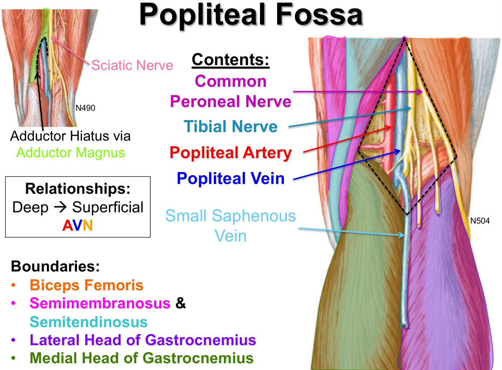
The popliteal fossa. Slide from the deck (Netter).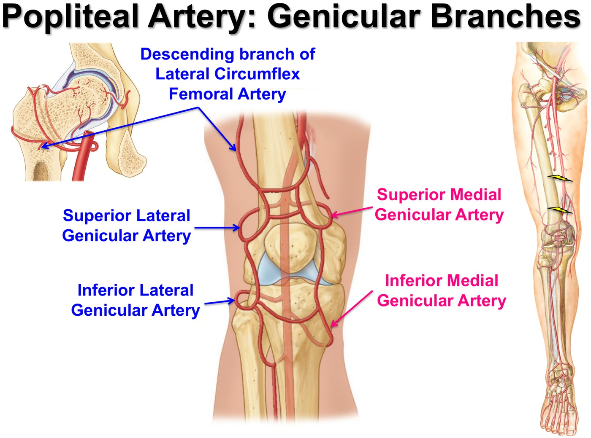
The genicular anastomosis. Slide from the deck (Netter).The genicular anastomosis (the genicular arteries, plus the descending branch of the lateral circumflex femoral and the descending genicular from above) keeps the leg supplied during full knee flexion, which can briefly kink the popliteal artery, or if the popliteal or femoral artery is blocked.
Knowledge check
An 85-year-old has 6 weeks of painless right leg swelling and a pulsatile mass high in the right popliteal fossa. → a popliteal aneurysm: pulsatile means arterial. It's the most common peripheral aneurysm, at risk of embolization, thrombosis and rupture; 80% are asymptomatic. High-risk ones get surgery (the stretched segment is replaced or stented). Half are bilateral, so check the other leg. (Rupture is a hemorrhage that can cost the foot or leg.)
Anterior Compartment
| Muscle | Action | Nerve | Point |
|---|---|---|---|
| Iliopsoas (psoas + iliacus) | Flexes the hip | Femoral (+ L1–L3 rami for psoas) | Comes from high on the posterior abdominal wall; tight from long sitting, so stretch it and strengthen its opponents |
| Sartorius | Flexes, abducts and laterally rotates the hip; flexes the knee | Femoral | The "tailor's" muscle (cross-legged sitting); in the pes anserinus |
| Pectineus | Adducts and flexes the hip | Femoral | Sits with the medial group but takes the femoral nerve |
| Quadriceps femoris: one common tendon over the patella to the tibial tuberosity | |||
| Rectus femoris | Extends the knee (less so with the hip flexed); helps flex the hip | Femoral | The only quad that crosses the hip |
| Vastus lateralis, medialis, intermedius | Extend the knee | Femoral | Intermedius lies deep to the others |
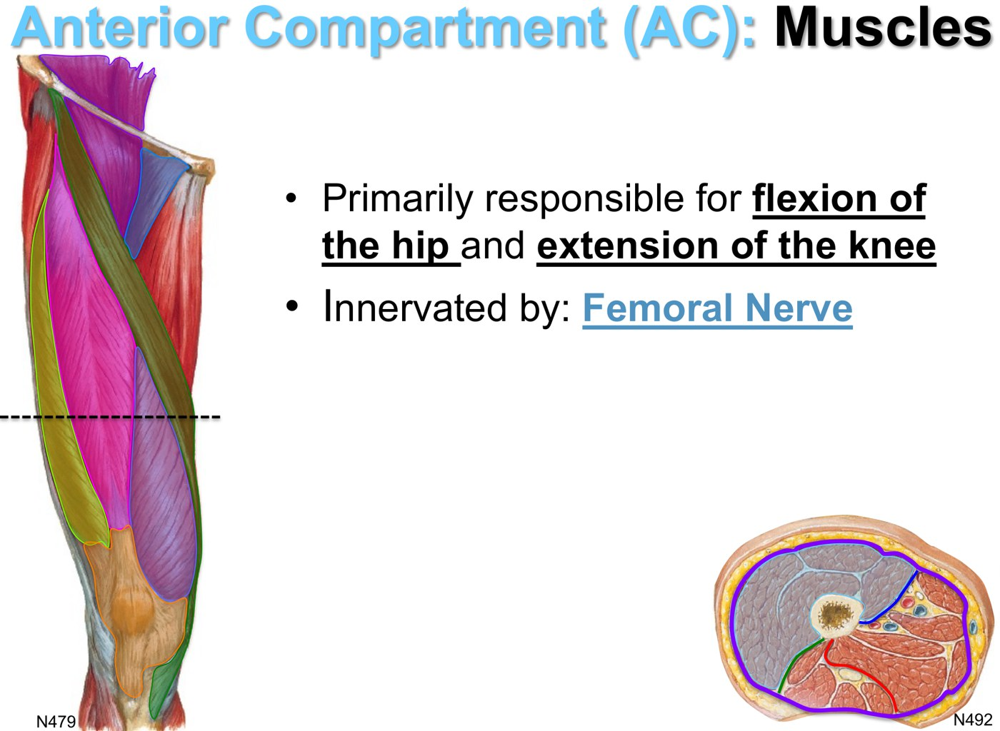
The anterior compartment. Slide from the deck (Netter).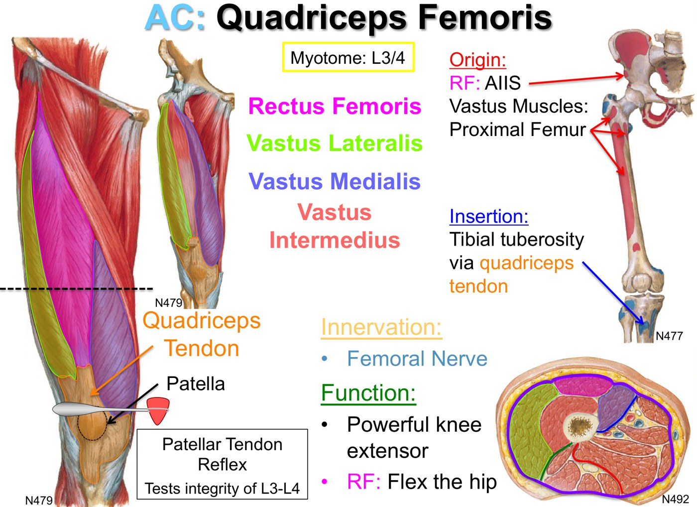
The quadriceps and the patellar reflex. Slide from the deck (Netter).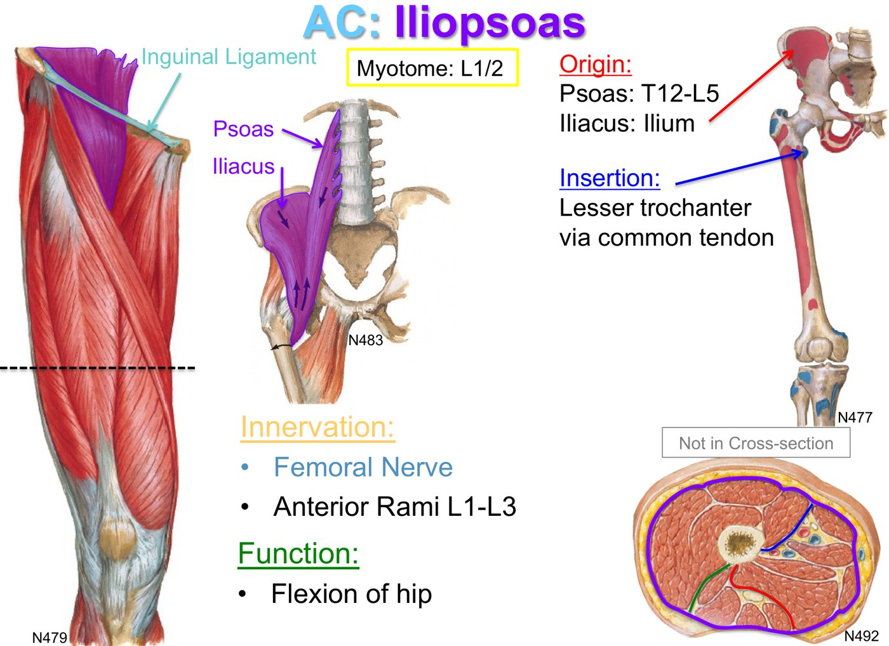
Iliopsoas. Slide from the deck (Netter).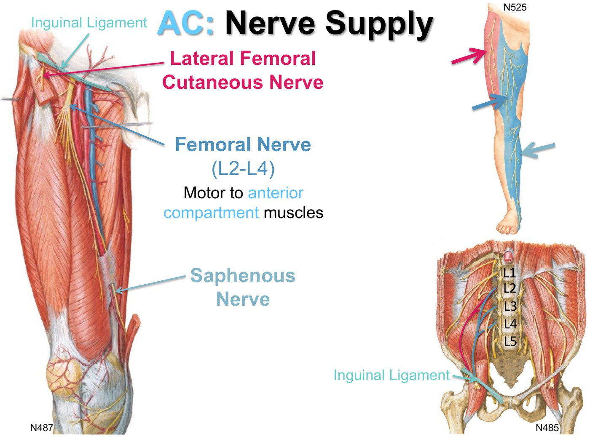
Femoral, saphenous and lateral femoral cutaneous nerves. Slide from the deck (Netter).| Nerve | Course and supply |
|---|---|
| Femoral nerve (L2–L4) | From the lumbar plexus, passes deep to the inguinal ligament into the femoral triangle, lateral to the femoral vessels; muscular branches to the anterior thigh, cutaneous branches to the front of the thigh |
| Saphenous nerve | The femoral nerve's terminal cutaneous branch, down the femoral triangle and adductor canal: skin of the anteromedial knee, leg and foot |
| Lateral femoral cutaneous nerve (L2–L3) | Under the inguinal ligament next to the ASIS: skin of the lateral thigh |
Strike the patellar ligament with the patient sitting, legs dangling: the quadriceps contract and the knee extends. It tests the femoral nerve and L3–L4. A weak or absent reflex points to a lesion interrupting the nerve supply of the quadriceps. (The central part of the quadriceps tendon from patella to tibial tuberosity is also called the patellar ligament; Dr. Martin accepts either name.)
Knowledge check
A dissection of the anterior thigh (a photograph, so not shown): tensor fasciae latae (small, from the ASIS into the IT band), sartorius (wrapping medially), rectus femoris (central), vastus lateralis and medialis on either side (intermedius is hidden deep), and the quadriceps tendon with the patella in it.
Medial Compartment
| Muscle | Action | Nerve | Point |
|---|---|---|---|
| Adductor longus | Adducts the thigh | Obturator | Borders the femoral triangle and adductor canal |
| Adductor brevis | Adducts the thigh | Obturator | Deep to longus; the obturator nerve's divisions straddle it |
| Adductor magnus | Adductor part: adducts and flexes; hamstring part: adducts and extends | Adductor part: obturator; hamstring part: tibial | The gap between its two parts is the adductor hiatus |
| Gracilis | Adducts the thigh, flexes the knee, helps rotate the leg medially | Obturator | The most medial; a weak adductor that can be transplanted (with its nerve and vessels) to replace a damaged muscle |
| Obturator externus | Laterally rotates the thigh | Obturator |
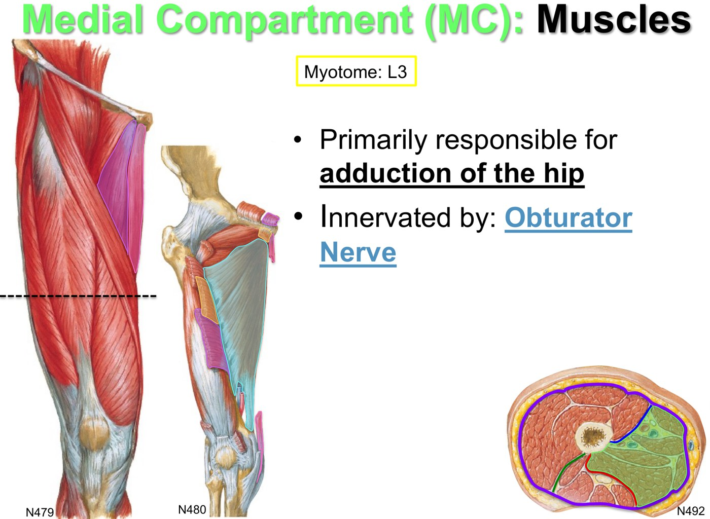
The medial compartment. Slide from the deck (Netter).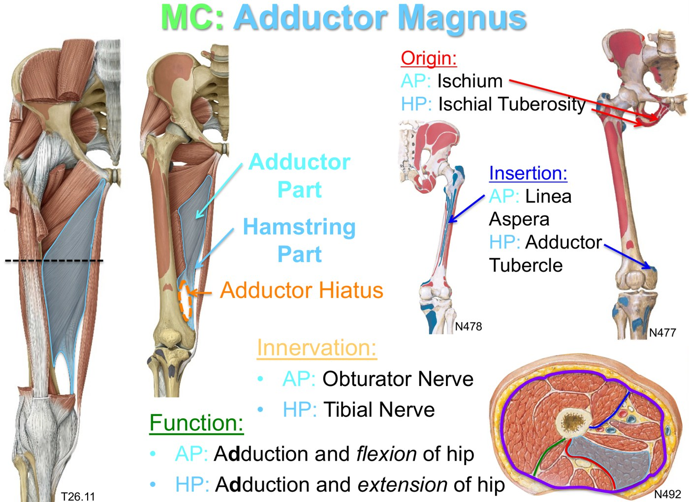
Adductor magnus: two parts, two nerves. Slide from the deck (Netter).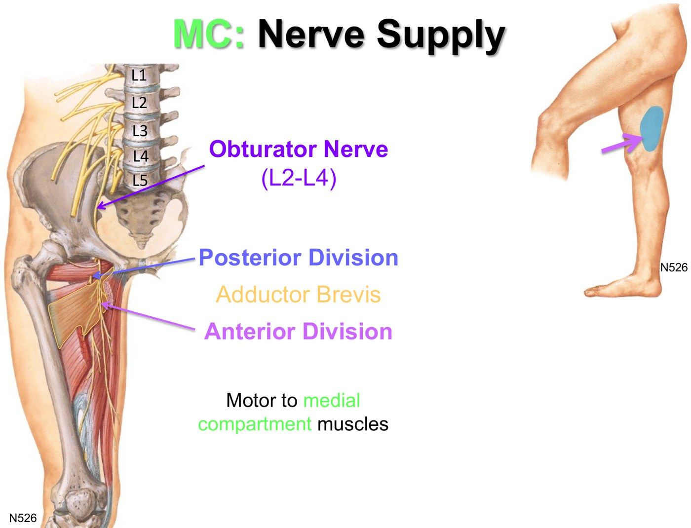
| Clinical point | Detail |
|---|---|
| Groin pull | Tearing or stretching of the adductors near their origin: active contraction plus passive stretch, in sports with quick starts or extreme stretching (soccer, sprinting, gymnastics). Bruising and pain; conservative care (RICE, NSAIDs). |
| Avulsion in teenagers | The cartilaginous growth plate is weaker than the muscle–tendon unit on its apophysis, so a powerful movement can break bone. Strong hip flexion can avulse the ASIS (the origin of sartorius and TFL). |
Knowledge check
A dissection of the medial thigh (a photograph, so not shown): iliopsoas very deep and proximal, adductor longus (brevis and magnus hidden deep to it) and gracilis on the most medial side. Separate the fascial planes to see the deep ones.
Vasculature of the Anteromedial Thigh
| Vessel | Detail |
|---|---|
| Femoral artery | The external iliac renamed as it passes under the inguinal ligament (the internal iliac stays in the pelvis); the femoral pulse is felt there. Superficial in the femoral triangle, so vulnerable to injury. |
| Profunda femoris (deep femoral) | Its big branch, deep in the femoral triangle, giving: the perforating branches (3–4, to the back of the thigh; they supply all three compartments), the lateral circumflex femoral (lateral thigh muscles; ascending, transverse and descending branches, the last to the knee anastomosis) and the medial circumflex femoral (between iliopsoas and pectineus to the back: most of the blood to the femoral head and neck) |
| Femoral vein | The popliteal vein continued above the adductor hiatus; up the adductor canal, out in the femoral sheath to become the external iliac vein (has valves) |
| Great saphenous vein | Superficial: from the dorsal venous arch of the foot up the medial leg and thigh with the saphenous nerve, through the saphenous opening into the femoral vein (has valves). The usual coronary bypass graft (accessible, muscular and elastic wall); the saphenous nerve is at risk when it's harvested. |
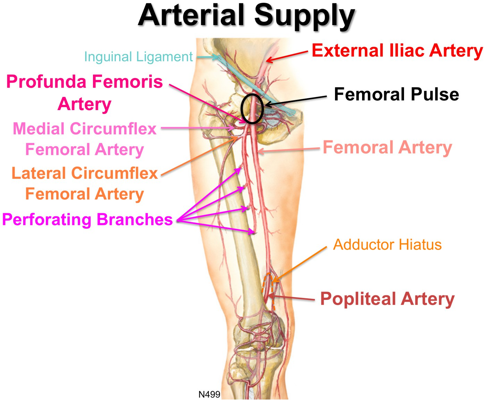
Arteries of the thigh. Slide from the deck (Netter).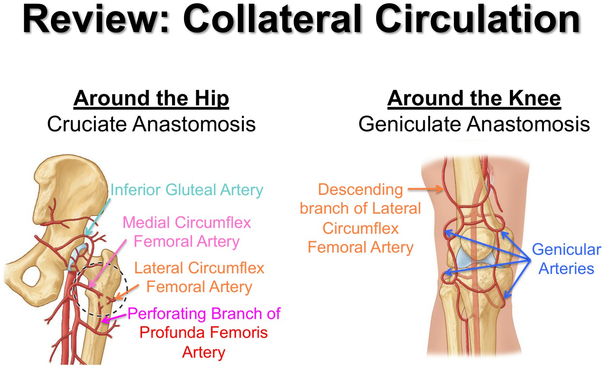
Collaterals: cruciate at the hip, genicular at the knee. Slide from the deck (Netter).The cruciate anastomosis (medial and lateral circumflex femoral, inferior gluteal and first perforating arteries) joins the internal iliac's branches to the femoral system. So if the femoral artery has to be ligated, blood still reaches the limb. The hip and the knee both have extensive collateral circulation.
The Femoral Triangle and Its Neighbours
| Space | Boundaries | Contents and notes |
|---|---|---|
| Femoral triangle | Inguinal ligament (ASIS to pubic tubercle), sartorius, adductor longus: it really is a triangle | Lateral to medial: NAVEL: femoral Nerve, Artery, Vein, Empty space (the femoral canal), Lymphatics (in the canal). Also the end of the great saphenous vein. |
| Femoral sheath | Continuation of the iliac and transversalis fascia | Wraps the femoral artery, vein and canal, but not the femoral nerve |
| Femoral ring | The small abdominal opening of the femoral canal | Normally lymphatics and fat; bowel can push through it: a femoral hernia |
| Adductor canal | Sartorius, vastus medialis, adductor longus | Carries the femoral artery and vein (and saphenous nerve) down to the adductor hiatus |
| Adductor hiatus | Between the adductor and hamstring parts of adductor magnus | The femoral vessels pass to the popliteal fossa and become the popliteal artery and vein |
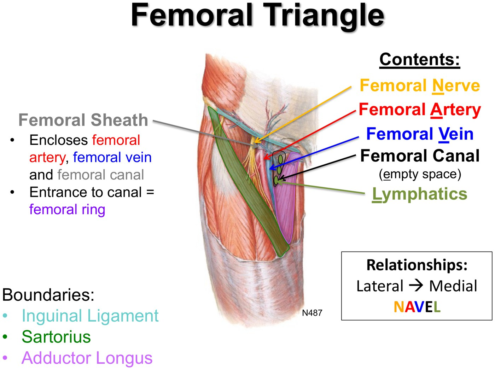
Knowledge checks
A 52-year-old woman has a groin bulge that grows when she does crunches; it's below her inguinal ligament. → a femoral hernia: abdominal contents through a weak femoral ring, below the inguinal ligament. More common in women (a wider pelvis means a wider ring). Rule out an incisional hernia by asking about surgery; direct and indirect inguinal hernias (more common in men) can't be ruled out on sex alone. Small asymptomatic ones may be watched; large ones can strangulate and are repaired with mesh. ("Groin" isn't an anatomical term; it can mean anything in the inguinal or medial region.)
An angiogram of the thigh: the femoral artery dividing, the profunda femoris, its two circumflex branches wrapping the femur, and the perforating branches to the back. Telling the medial from the lateral circumflex here "would never be a question on the exam".
A dissection of the femoral triangle (a photograph, so not shown): its boundaries sartorius, the inguinal ligament and adductor longus, and its contents, lateral to medial, the femoral nerve, artery and vein.
Superficial Veins and Lymphatics
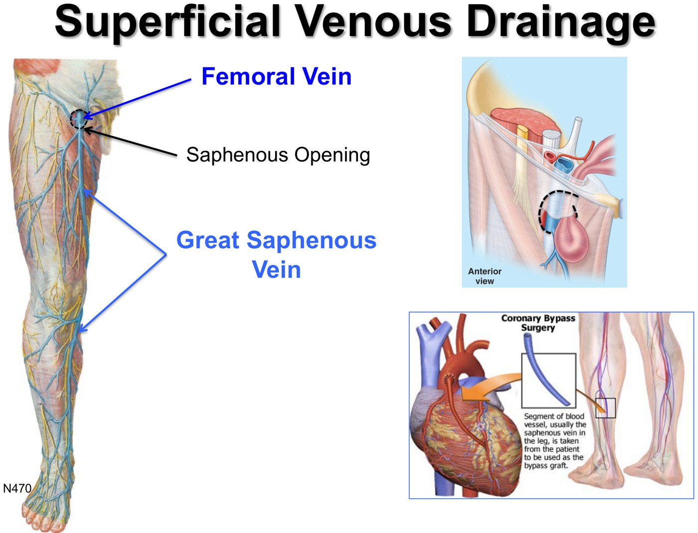
The great saphenous vein and its use in bypass surgery. Slide from the deck (Netter).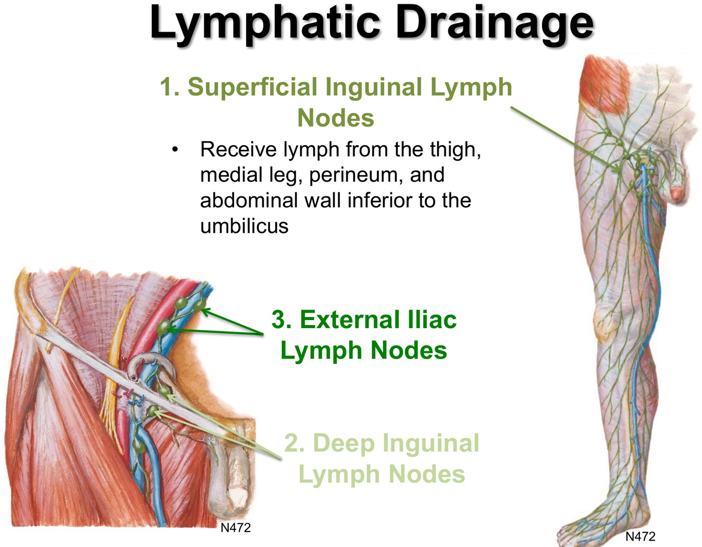
Inguinal lymph nodes. Slide from the deck (Netter).| Nodes | Drain | Then to |
|---|---|---|
| Superficial inguinal (top of the femoral triangle) | The abdominal wall below the umbilicus, the perineum, the thigh and the medial leg | Mostly the external iliac nodes; some to the deep inguinal |
| Deep inguinal (medial to the femoral vein) | Deep lymph of the limb | External iliac nodes |
Superficial veins and lymphatics run superficial to the fascia lata. Lower-limb lymph works against gravity, which is why lymphedema of the leg is common.
Built from Dr. Charys Martin's “Anatomy of the Gluteal Region & Thigh” module: the nine recordings (pelvic ligaments and spaces review, gluteal musculature, gluteal neurovasculature, posterior compartment muscles and neurovasculature, anterior compartment, medial compartment, arterial supply, superficial venous drainage), the knowledge checks and their feedback videos, the 59-slide detailed deck and Dr. Martin's notes. Left out and described in text: the cadaver knowledge checks (posterior, anterior and medial thigh, femoral triangle), the walking-patient video still, the photos of the hurdler's bruised thigh and a swollen leg, and the groin-pull photographs. The lettered pelvis-ligament and angiogram knowledge checks are summarized rather than shown. The slides' myotome boxes and most muscle attachments are left to the slides; the tables give action, nerve and clinical relevance. Notes: the injection knowledge check's answer is the "upper right" quadrant, which is the upper outer quadrant in its picture. The femoral nerve is listed with the femoral triangle's contents but lies outside the femoral sheath. The notes place the superficial inguinal nodes "deep to fascia"; the take-home slide says superficial lymphatic drainage runs superficial to the fascia lata. Caption corrections: gluteus medius (“Glute Meade”), tensor fasciae latae (“tensor fascia Lada”), Trendelenburg (“trend Ellenberg”), superior gluteal nerve (“super gluteal nerve”), obturator internus (“operator internists”), gemelli (“MLS”), quadratus femoris (“quadratus Morris”), biceps femoris (“biceps for Morris”), semitendinosus and semimembranosus (“semi tender gnosis”, “semi member gnosis”), ischial tuberosity (“ACL tuberosity”, “steel tuberosity”), avulsed (“evolved”), rectus femoris and the vasti (“rectus for Maurice”, “fastest lateral”), iliopsoas (“ilio psoas”, “Elias always”), gracilis (“chrysalis”), adductor longus (“a Doctor Longus”), cadaveric (“category”), femoral (“from oral”), popliteal (“Pablo, still”, “property of fossa”), pudendal (“pidiendo”) and greater trochanter (“greater to porosity”).